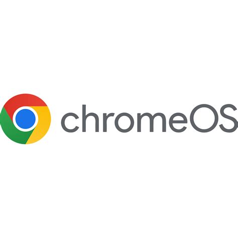

ChromeOS:

Pois é a Google possui um sistema operacional para o chrome, e sim tem motivo para isso que logo será contado na história.
História:
Tudo começou em julho de 2009 quando o ChromeOS foi anunciado para ser um sistema operacional leve, seguro e focado na web, utilizando
o navegador Chrome como interface principal.
Lados positivos e negativos do ChromeOS:
Curiosidades sobre o ChromeOS:
1) Além de ser baseado na interface do Chrome, o ChromeOS foi criado a partir de Linux.
2) O ChromeOS é totalmente focado na nuvem o que faz com que ele só te dá acesso a sites e não aplicativos.
3) Atualizações automáticas que acontecem em segundo plano.
4) O ChromeOS tem uma integração com o Microsoft 365.
5) A Google já realizou concursos para encontrar falhas de segurança.